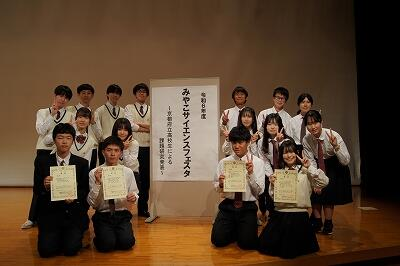
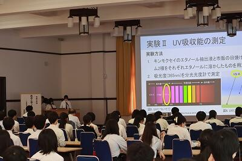
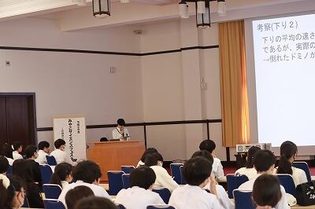
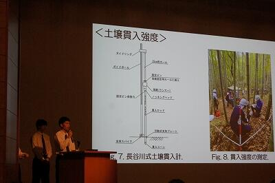
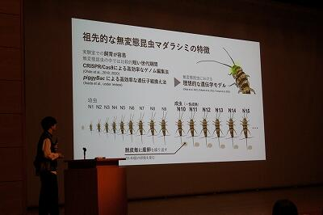
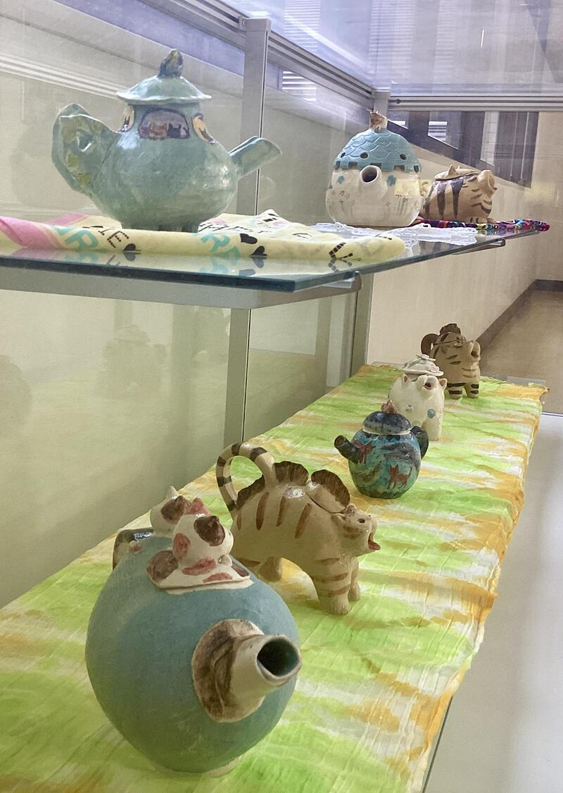
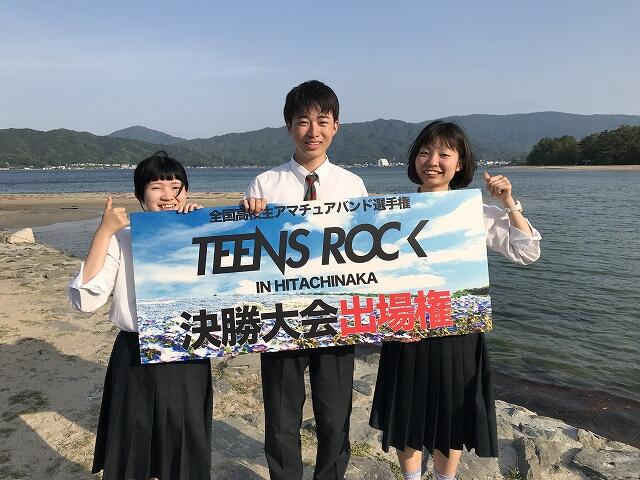
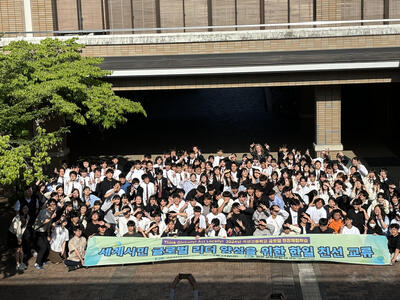

SAGANO BLOG
- >
- SAGANO BLOG
- >
- すべて(時系列)
2024年07月12日
令和6年7月10日 本校第18期卒業生 堀越 秀郎 様（株式会社S＆L 代表取締役）より、京都銀行SDGs私募債「未来にエール」～次世代を担うこどもたちへ～にて図書館に書架を御寄附いただきました。

御寄附いただいた回転書架と展示用書架は、現在、2年生が取り組んでいる英語多読用図書コーナーで利用しています。
生徒たちの「学びへの意欲」や「読む楽しみ」を支えてくれることでしょう。
大切に使用させていただきます。ありがとうございます。
また、贈呈式では、学校の記録や旧校舎のスケッチ等をご覧いただき、当時のお話を伺うこともできました。
卒業生の堀越様の嵯峨野高校への想い、京都銀行様の御協力に感謝申し上げます。
2024年07月12日
それは、ひとりの生徒の「？」から始まりました。
南館生徒昇降口を入った右奥に１枚の書が飾られているのを御存じですか？
何と書いてあるのか、長年の謎でした。

何が書かれているのか知りたい。
そう思った生徒が調べていくと、書の落款が別の書と同じであることが分かりました。
その落款の主は、本校の卒業生である清水菁花氏（書家）でした。
学校を通じて清水氏にお尋ねしたところ、書は「夢」と書いたとのお答えでした。
書を改めて観てみると、なるほど「夢」と読めます。
独特の字体をしています。中国、明末期・清初期の書家「傅山」（ふざん）の臨書だとのことです。
夢を追いかける嵯峨野生への清水先生からのエールを感じます。
また、清水氏は、書を学ぶことが減ってきたこの時代に、生徒が「書」に興味を持ってくれたことが大変うれしいとおっしゃっていました。
ひとつの「？」が、素敵なつながりを生み出してくれました。
2024年06月27日
令和６年度生徒会役員認証式をおこない、校長室で、校長先生から一人ひとりに役員証を手渡しました。
認証式後は、全員が抱負を述べ、校長先生から激励のメッセージの後、記念撮影をしました。


「できるだけたくさんの生徒の声を聞き、それらを反映し、生徒会活動や学校のことをもっと自分事として感じてほしい。」という思いを持った新生徒会の活動をお楽しみに！
2024年06月17日
6/10(月)本校にて、「人類の進化と歴史を振り返って、これからの学びを考える」という題目で山極壽一先生に御講演をいただきました。
2025年国際博覧会のシニアアドバイザーも務めていらっしゃる山極先生は、人類進化論を専攻しておられ、今回の御講演では、ゴリラの生態とヒトとの対比から、人間であることの本質にもつながる大変興味深く、奥深いお話をしてくださいました。
また、今回の講演会では、司会進行や講師の先生の誘導は生徒が行いました。希望した生徒による運営でしたが、１つ１つ丁寧にこなしてくれました。

今回の講演を聴いた、生徒の感想をいくつか紹介します。
・山極先生のご講演を聴いて、新しく知る、学ぶことがたくさんありました。最初の、不利益を承知で他人に何かを「教える」のは人間だけだ、というところから考えたことがなかったので、とても驚きました。私たちにとって、先生方に勉強を教えていただくことは当たり前だったので、自然界の他の動物たちと比べてみるとそのような違いがあるのだなと思いました。他にも、成長の仕方の違いや、共同体の発生の違いなど、様々なことを学ぶことができました。私たち人間が動物たちから学べることはたくさんあると知り、もっと知りたくなりました。
・ゴリラから学ぶということ自体が新鮮で、今回のお話を聞いて驚き、新しく学ぶことが沢山ありました。また、類人猿とまとめて見ていたものが、実は様々な違いがあると知れてとても嬉しかったです。人間以外のものとの違いから、人間を客観的に見て、在り方を考えることの大切さに気づけました。
・今日山極先生のお話を聴いて、人間しか持ちえないこと、または類人猿と似ていること、多くのことに気づかされました。特にお話の中で何度か共感能力や雰囲気ということをお話されているとき、私は「空気を読む」といった言葉が思い浮かんだのですが、今やインターネットで交流することも多い中、確かにそのように気を配ることは減ったなと思いました。
★山極先生からメッセージをいただきました！
2024年06月14日


スーパーサイエンスラボ、アカデミックラボで探究活動を行い、その研究成果を発表した３年生と、探究活動を始めた２年生が会し、合同でラボ活動を行いました。
２年生は研究テーマの設定や、研究の進め方について悩んでいることなどを話し、３年生はアドバイスをするとともに、自分たちが苦労したことや、工夫したこと、新たに発見をしたこと、気づいたことなどを語ってくれました。ラボ活動では本校の教員や、時には大学の先生からも指導していただくことがありますが、先輩からのアドバイスはより身近な視点で、２年生は目を輝かせて聞いていました。
2024年06月14日
こちらの記事の続編です。京都府立嵯峨野高等学校 6月10日 Sagano Global Forum for Student Research (SGF) PartⅠ - SAGANO BLOG (kyoto-be.ne.jp)
午後からは学年ごとに、それぞれのステップに応じた活動を行いました。１年生は探究活動の原点であり,核となる問いについて深める「問いづくりワークショップ」に励みました。
「質問と問いの違いとは？」「質問はどんなふうに分類できる？」「それぞれの長所と短所は？」「探究に向いている問いとは？」グループに分かれ様々な視点から問いについて深め、嵯峨野高校の探究活動のメインとなるラボ活動に向けて第一歩を踏み出しました。
2024年06月14日
嵯峨野高校の地理の授業では毎年本校周辺の地形の特徴や土地利用を考察するミニフィールドワークを実施しています。
今年度も１学期の中間テスト後の期間に、２年生の全クラスで実施しました。
嵯峨野高校の住所は常盤「段ノ上」町。東にある郵便局の住所は常盤「窪」町。住所表示にも地形の特徴が表れています。
道中には建物をはさむ二つの道路の高低差が目立つ坂道がありました。この高低差も気になります。
丸太町通には地下通路で交差するところもあり、地下通路を利用して丸太町通の道幅を歩測してみるミッションに取り組みました。
住宅街の中に見られる大きくくぼんだ道路。このくぼみがどのように形成されたのか。学んだ知識を駆使しながら考察してみます。
嵯峨野高校の周辺を普段歩き回ることはあまりないかもしれませんが、改めてゆっくり観察しながら歩いてみると、意外に面白い地形に気づくことができます。
自宅の周りの身近な地域においても、面白い地形を発見し、その地形がどのように形成されたのか、そこで営まれる人々の生活の特徴は何か、など地理的なものの見方・考え方を働かせた考察をしてみてはいかがでしょうか。
2024年06月14日
6月7日、１年１,２,５組の生徒がGI（グローバルインタラクション）の授業で、アメリカのJunipero Serra High Schoolと Notre Dame High School Belmontの生徒と交流しました。参加したクラスの国際交流委員がその様子をまとめてくれました。
『嵯峨野高校の校舎案内をしました。実験室の説明などをしながら会話が弾みました。特に楽しかったのは、図書館で和食の本を見ながら交流をしたことです。アメリカの話も沢山聞けて良かったです。日本のことについてももっと学びたいと思いました。』

『私の班は英語版かるたを紹介しました。魚の絵を見て、好きな寿司ネタを尋ねると「ほぼ全部好き」とのことだったので、日本文化の人気の高さがわかりました。今度は日本語のかるたも紹介して一緒に遊んでみたいです。これをきっかけに私もアメリカの伝統文化やポップカルチャーについて調べてみたいと思います。』
『日本の祭りについて紹介しました。一番印象に残ったことは、はっぴを着てもらって皆さんがとても喜んでくださったことです。またぜひ交流したいです。』
2024年06月13日


京・平安文化論ラボです。
古典離れを課題とし、その課題解決のための探究活動をしています。
その活動の様子を、NHKあさイチ様に取り上げていただけることになりました。
放送は、６月２０日（木）８時１５分からです。
「愛でたいnippon」のコーナーです。
この日は『源氏物語』の特集ということで、その中の１つとしてラボを紹介してくださいます。
どのような活動をしているのか、生徒の様子をぜひ御覧ください。
また、今年度は『源氏物語』と『枕草子』の２テーマで探究活動を行っています。
この作品の魅力を発信するため、文学研究はもとより、京都の神社仏閣を巡っていただくスタンプラリーの企画運営や、登場人物をイメージしたお菓子のデザイン・販売を行う予定です。
文学を読むという方法だけでなく、さまざまな方法で、古典の魅力を知っていただこうと生徒たちは奮闘しています。
2024年06月11日
6月10日 AM「課題研究発表会」
本校では毎年校内での課題研究発表会を行ってきました。今年度は初めて、全校生徒が終日参加し、講演会やワークショップなども組み合わせた、いわば「探究Day」という形でリニューアル開催しました。
午前中は、３年生の課題研究発表会です。体育館での開会式の後、３年生１～６組の生徒はアカデミックラボの研究成果を英語で、３年生７・８組の生徒は、スーパーサイエンスラボⅠ～Ⅲの研究成果をそれぞれプレゼンテーションしました。
アカデミックラボ58件、スーパーサイエンスラボ35件、サイエンス部1件、さらに海外からJunipero Sera High School 2件、Notre Dame Highschool Belmont校1件、合計97件の研究発表が行われる一大イベントとなりました。
当日までに、オンライン上に全ての発表のスライド pdf資料 を閲覧できるようにしました。生徒達は予めこれらを閲覧し、コメントや質疑応答を行いました。英語のスライドは、質問コメントも英語です！
いよいよ当日の発表会。各グループが２～３回ずつ発表を行うため、発表延べ数は268本！ したがって部屋数もHR教室や特別教室併せて35会場と、文字通り全校あげてのイベントとなりました。聴講者は本校全生徒の他、TAとして留学生、教育関係者が来場されました。
アカデミックラボの発表は、質疑応答も全て英語です！質問する側も回答する側も、頭をフル回転させながら真摯に伝えようとする姿が印象的でした。
スーパーサイエンスラボの発表および質疑応答は日本語で行われることもあり、質問する側も回答する側も、科学的・論理的に深いレベルで議論する様子も観られました。各発表の司会は２年生が中心となって取り組みましたが、有志の３年生の他、１年生もチャレンジしてくれました
終了後「これで終わりかと思うと、感慨深いものがあるな･･･」とつぶやいている生徒がいました。今回の経験を自信に変えて、さらに大きな課題解決と夢の実現に向かってくれることと思います。
2024年06月11日
６月９日（日）に京都大学にて「令和６年度みやこサイエンスフェスタ」が実施され、府立高校９校の生徒が課題研究の成果を発表しました。

本校からは３年生４グループが発表しました。タイトルは以下の通りです。
キンモクセイの秘める効能～抗酸化能とUV吸収能の測定～
逃げ水観測時の温度測定に基づく光路と実測との比較
段差がドミノの倒れる速さに与える影響について
熊本県玉名郡和水町の放置竹林の現状把握～土壌情報と林分材積～
どのグループもこの日に向けて、時間をかけて準備してきました。
これまでの探究の過程で多くのことを学んできました。
研究結果だけでなく、その学びすべてが成果です。お疲れさまでした。

この日は１・２年生も参加し、興味のある発表を聴き、質疑応答に参加しました。積極的に手を挙げて質問する１年生に頼もしさを感じました。

また、本校卒業生４名が講評者として参加し、うち１名は大学院での自身の研究について発表してくれました。

高校生のお手本になるような論理的で理解しやすい発表でした。
生徒たちにとって憧れの存在になったのではないかと思います。
協力してくれた卒業生の皆さん、ありがとうございました。
2024年06月11日
6月8･9日に行われた第63回京都府高等学校放送コンテスト兼第71回全国高校放送コンテスト京都大会において下記のとおりの結果となり、３部門でNHK杯全国高校放送コンテスト出場が決定しました。コロナ禍で中止の年を除いて16年連続の出場となります。
◎朗読部門 ２年生女子第2位
◎ラジオドキュメント部門 第1位
◎創作テレビドラマ部門 第2位
また、上記以外にも朗読部門で３年生女子が5位、１年生男子が9位、入賞者以外に３名が決勝出場、アナウンス部門で３年生女子が決勝出場、創作ラジオドラマ部門第3位の好成績を残しました。

全国大会は7月22日(月)から４日間にわたり、東京の代々木オリンピックセンター及びNHKホールにて開催されます。出場する全部門で準決勝進出が出来るよう頑張りますのでご声援よろしくお願い致します。
2024年06月10日
６月８日（土）に行われましたインターハイ兼近畿大会京都府予選会において、本校の女子が、団体の部で京都府第５位になり、見事近畿高等学校剣道大会への出場が決定しました。
１回戦の福知山成美戦は、４－１で危なげなく勝利しました。
続く２回戦は、シード校で強豪の山城高校でした。先鋒は粘りを見せましたが惜敗、次鋒は先月の高校総体で骨折した選手でしたが、痛みがある中サポーターをはめて出場し勝利、中堅は、すごくしっかりした上段の選手でしたが、先に１本を先取し、終了間際に１本取り返され引き分け、副将は、本校の女子部長が積極的に攻め勝利し、ここまで２－１と１勝リードしました。相手の５人目の大将は、すごく強い選手でしたが、本校の大将が粘りをみせ何とか引き分けに持ち込み、そのまま勝利し京都府第５位になり、近畿大会への出場を決めました。個々の力では格上の相手もチームで勝つときの理想となる勝ち方でした。本当に素晴らしい戦い方だったと思います。７月の近畿大会に向けてさらに力をつけていって欲しいと思います。
一方、昨年度１月の大会でシード入りしていた男子団体は、本校の選手の1本と思われましたが相手の１本に判定され、その１本を取り返そうと白熱した試合が展開されましたが、その１本を取り返せずに敗退しました。目標にしてきた近畿大会出場が叶わずものすごく残念だったと思います。
悔しい思いを胸に臨んだ翌日に行われた個人戦では、部長の選手が４回勝利し、出場選手110名中の第５位に入る大活躍でした。５回戦（コーﾄ決勝）では、残念ながら負けてしまいましたが、最終的に優勝した選手をあと１歩まで追い詰めるという素晴らしい試合内容でした。負けた悔しさはあるものの、本人のやり遂げたという言葉と顔つきが充実ぶりを物語っていました。後輩たちの良い刺激になったと思います。
３年生の部員はそれぞれ次の目標に向けて切り替えることになりますが、特に近畿大会に出場する部員については、週に何回か稽古に参加し、京都府の代表にふさわしい活躍をして欲しいと思います。
今まで応援ありがとうございました。これからもどうぞよろしくお願いいたします。

2024年06月08日
嵯峨野高校では、課題研究の成果を校内や府内で発表するのみならず、外部の学会でも発表しています。表題の学会には毎年参加しており、今年も１１名の生徒が４件の発表を行いました。会場は千葉の幕張メッセです。
学会前日は上野の国立科学博物館に赴き、科学的知見を深めました。国立科学博物館は「日本館」と「地球館」からなる、日本屈指の展示・所蔵量を誇る博物館であり、フロア１つでも通常の博物館の特別展を軽く上回る充実度です。生徒は研究発表だけでなく博物館見学も非常に楽しみにしており、充実した時間を過ごしました。例えば、初期の機械的計算機と言える「九元連立方程式求解機」をみた彼らは、そのアイデアにしきりに驚愕・感心していました。
参考：国立科学博物館「九元連立方程式求解機」
https://www.kahaku.go.jp/exhibitions/vm/past_parmanent/rikou/computer/kyugen.html


学会当日、宿泊所から幕張メッセに向かいました。入場手続きゲートを間違えてしまう場面もありましたが、無事会場に到着しました。 生徒は会場の大きさに驚いているようでした。


ポスター会場には JAXA や JAMSTEC、防災科研などの様々な研究機関・学会・大学や防災・計測関連企業の様々なブースがあり、クイズラリーも実施されていました。生徒は様々なブースを訪れて知見を深め、さらにノベルティグッズをたくさん集めていました。
午後、いよいよ「高校生ポスター発表」の部が始まりました。すごい熱気です！


実は、彼らは発表会に向けてかなり時間をかけて準備してきました。校内や他の府立高校生との発表会に比べると、鋭い質問や指摘事項が多かったのですが、深いレベルでの指摘や議論を通して思考が深まり、苦労が報われた充実の二日間でした！
2024年06月07日
嵯峨野のオアシス（２F：図書館）の前には、芸術科陶芸教員の作品を展示しております。
保護者等のみなさまへの陶芸教室もご好評をいただき、嵯峨野高校の陶芸文化がますます活発になっております！


生徒昇降口(1F)では世界のおもしろ建築と合わせて、昨年度の美術選択者（現2年生）の建築模型を展示しております。生徒のコンセプトも嵯峨野らしさが溢れており、ほほえましいこと間違いなしです！
そして生徒指導部教員の密やかな手作り工作や、マニアックな廊下の展示物。
さらにこちらは、校内在住カラス師匠による、熟練の技「カラスの巣」でござます！地学実験室前(4F)にて、匠の技を間近でご高覧いただけます。
ご来校の際には、ぜひ嵯峨野高校をお楽しみください。
2024年06月03日
５月26日（日）に天橋立海水浴場で行われた「TEENS ROCK IN KYOTO 近畿地区大会」において、３年生のバンド「ハロー二世帯住宅」が優勝しました。

自分たちで作った曲を２曲披露し、オリジナリティーを評価していただきました。
この結果により、８月10日（土）に茨城県ひたちなか市で実施される「TEENS ROCK 2024～GP FINAL IN HITACHINAKA～」に出場することになりました。
ひたちなか市でも頑張ります！
2024年05月31日
5月21日(火)火曜日、韓国のコクソン高校からおよそ80名の来校があり、1年生１～６組の生徒がGI（グローバルインタラクション）の授業で交流しました。その様子を参加クラスの国際交流委員がまとめてくれました。

『私は学校の案内をしました。韓国の高校生が制服や食堂にとても驚いていたのが興味深かったです。その時にコクソン高校では売店で昼食を無料で食べられることなどを教えてもらい、文化の違いを実感しました。』
『驚いたのは、体育館にはいったとき、みんなのテンションが上がって「ハイキュー！」と言っていたことです。後から話してみると、韓国では、「ハイキュー‼︎」や「君の名は」など、日本のアニメが人気なのだとわかりました。』
『和室を案内しました。将棋部や華道部など様々な日本の伝統文化の部活が和室を使っていることを伝え、コクソン生が日本の文化に興味を持ってくれたので嬉しかったです。また、スクールツアー中にコクソン高校での放課後の過ごし方を聞いたりして、英語での会話が盛り上がったので楽しかったです。』
『私は着物や浴衣について紹介しました。お互い初対面だけど、韓国料理や漫画など、互いの国の文化について話せたのがおもしろかったです。』
『コクソン高校の生徒が唐揚げや梅干しなどの日本の食べ物を知っていることに驚きました。』
『私は和菓子を紹介しました。彼らもいくつか和菓子を知っていて好みについての意見を交換できたのが楽しかったです!』

『私たちは竹とんぼや百人一首、双六などの日本の伝統的な遊びを紹介しました。このイベントを通して、私は英語で他国の人と交流する楽しさを学び、これからもどんどんこう言った機会があれば参加したいと思うようになりました。』
『私たちのグループは「だるまさんがころんだ」を紹介しました。私が驚いたのは、韓国にも似たような遊びがあるということです。国や言語が違っていても、遊びを通して仲良くなれるということを実際に体験することができて良かったです。』
『英語に自信がなくても、積極的に会話を楽しもうとすることが何よりも大切だと学んだ。』
『外国語で外国の方とお話しするのは思っているよりも難しくて、もっともっと練習していかないといけないと感じました。また、英語だけでなく、韓国語にも挑戦してみたいなと思いました。』
『相手についてもっと知ろうとすることで、ぐっと距離が縮まって貴重な体験ができたと思います。』
『自国の文化も他国の文化も知り、互いに尊重していくことが大事だと思いました。』
『この交流をきっかけに互いの文化を知って自分の世界を広げられたらいいなと思います。』
2024年05月30日

{kind=link}
{kind=link}
{kind=link}
{kind=link}
{kind=link}
{kind=link}
{kind=link}
{kind=link}
{kind=link}
{kind=link}
{kind=link}
{kind=link}
{kind=link}
{kind=link}
{kind=link}
{kind=link}
{kind=link}
{kind=link}
{kind=link}
{kind=link}
{kind=link}
{kind=link}
{kind=link}
{kind=link}
{kind=link}
{kind=link}
{kind=link}
{kind=link}
{kind=link}
{kind=link}
{kind=link}
{kind=link}
{kind=link}
{kind=link}
{kind=link}
{kind=link}
{kind=link}
{kind=link}
{kind=link}
{kind=link}
{kind=link}
{kind=link}
{kind=link}
{kind=link}
{kind=link}
{kind=link}
{kind=link}
{kind=link}
{kind=link}
{kind=link}
{kind=link}
{kind=link}
{kind=link}
{kind=link}
中間テストが終わり、今週から２年生も平常補習が開講しました。国語、数学、英語の各教科に対し希望者を対象として実施しています。７限までの授業を受けた後での補習ということで、疲労も溜まっているかもしれませんが、教室の雰囲気は真剣そのもので、ハイレベルな内容に挑戦する熱気が漲っていました。
2024年05月30日
5月20日(月)、2年8組の生徒がSE（サイエンスイングリッシュ）の授業でインドの Rukmini Devi public shool の生徒とオンラインで交流しました。参加したクラスの国際交流委員がその様子をまとめてくれました。

『自己紹介の中でお互いの趣味について話した。ゲームを趣味にしている人が多かったのでゲームについての話で盛り上がった。交流した生徒たちの中では、日本のメーカの人気が高く、日本製品を持っている人も多かった。』
『自己紹介をしているときに、RUKMINI DEVIの生徒が、私たちの名前のイントネーションを何度も確認して、話を振る時も全体に投げかけるのではなく名前を呼んでから質問などをしていたので、コミュニケーションにおいて名前を大切にしてるのだなと感じた。』
『私たちのグループは「 International Partners of Sagano High school」についてスライドを用いて紹介した。とても興味深く聴いてくれ、たくさんの質問をしてくれた。』

英語でまとめてくれた生徒もいました。
『We had an engaging online interaction with students from Rukmini Devi. During our conversation, we shared insights about our respective schools, including our SSL (Super Science Lab), classes, and various school events. I found it fascinating to discover that our academic curriculums were quite similar. Speaking with them in English was both interesting and enjoyable, making it a truly meaningful experience. I wish we had more time, so someday, I look forward to visiting each other's schools and talking in person.』
{kind=link}
〒616-8226
京都市右京区常盤段ノ上町15番地
TEL 075-871-0723 FAX 075-871-0724
E-mail [email protected]
Copyright (C) 京都府立嵯峨野高等学校 All Rights Reserved.